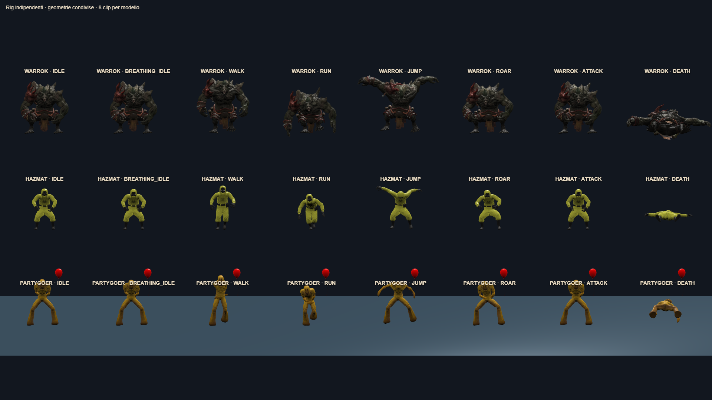
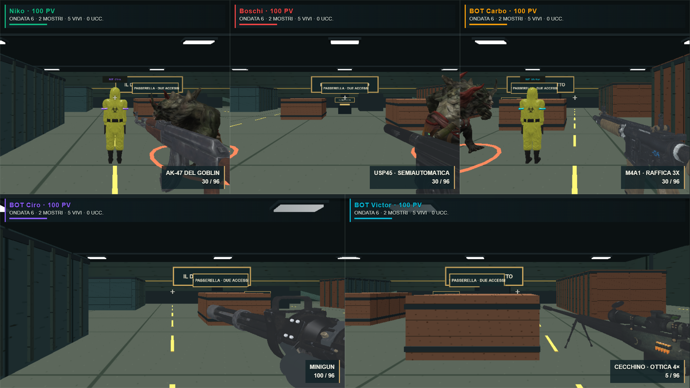
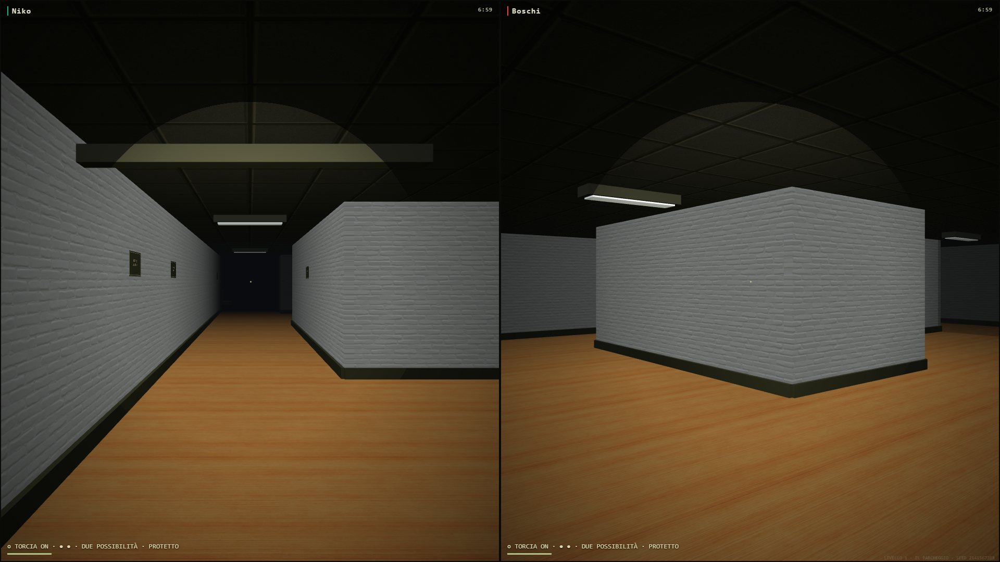

ORDA FINALE + BACKROOMS · BUILD E VERIFICA COMPILATA SUPERATEWarrok è arrivato.
Un modello, otto animazioni, istanze indipendenti. Ruggito, salto breve, pugno con impatto verificato e morte completa. Dalla sesta ondata, massimo due Warrok vivi.
Retarget offline su Hazmat e Partygoer; creature non umanoidi conservate. Campione di sviluppo: 59.3 FPS, cinque visuali, RTX 3050, 1669×939, 6–13 nemici inclusi due Warrok. Ultimi ritocchi non rimisurati. Verifiche e limiti · Apri Party Game

Otto clip su Warrok, Hazmat e Partygoer — posa campionata, non una prova del movimento da sola
Warrok nella versione compilata di Orda — cinque visuali e modelli arma reali
Partygoer nella versione compilata di Backrooms — regole originali preservateNessun commit, push o deploy. Provenienza conservata; licenze dei FBX da verificare prima di pubblicare.